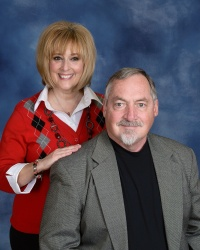

|  |
Mark WilsonRetired Pastor in the United Methodist Church I am an Ordained (Full) Elder in the Kentucky Conference of the United Methodist Church. I have over 40 years experience as Solo Pastor, Senior Pastor and Interim Pastor of various U.M. Churches. I've started a new church, taken a relocated church meeting in a school and built the first unit, and also was the senior pastor of a church that completely relocated to a new property. I retired in 2017. Since then I have served as an interim pastor in two U.M. Churches. |
| Charge | Dates | assignment |
|---|---|---|
| Hastings-Bakerton U.M. Churches | 1979-1983 | First Pastorate |
| Virginia Beach Christian & Missionary Alliance Church | 1983-1985 | Church Planter |
| Claylick United Methodist Churches | 1985-1988 | Pastor |
| Faith Community United Methodist Church | 1988-1993 | relocation/Church Plant |
| Leave of Absence | 1993-1995 | |
| Warsaw United Methodist Church | Feb. 1995-1997 | Pastor |
| Pleasent Grove United Methodist Church | 1997-2000 | Pastor |
| Mt. Washington United Methodist Church | 2000-2011 | Senior Pastor / relocation |
| Advance United Methodist Churche | 2011-2017 | Senior Pastor |
| Carrollton U.M. Church | Oct.2017-2018 | Interim |
| Maysville Central U.M. Church | Oct. 2018-2020 | Interim |
| Pastor | ⭐️⭐️⭐️⭐️⭐️ | Senior Pastor | ⭐️⭐️⭐️⭐️ |
| Reloction | ⭐️⭐️⭐️⭐️⭐️ | Church Planting | ⭐️⭐️ |
| Interim Pastor | ⭐️⭐️⭐️⭐️⭐️ |
{kind=link}